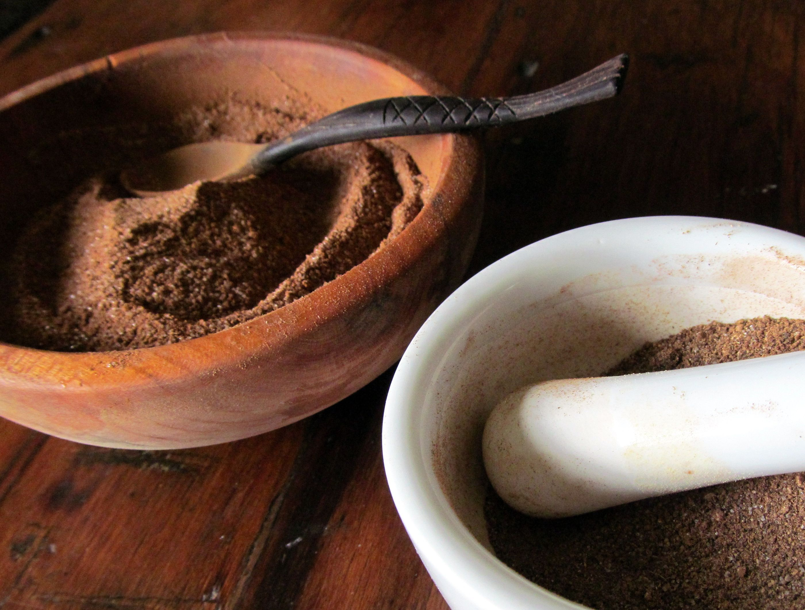

Credits & Acknowledgments
Images
- Image of Poudre Douce from Food52, Community-submitted recipe for Poudre Douce, featuring a modern adaptation inspired by historical English cooking traditions.

- Image of Buttered-Beere from Oakden, historical recipe blog post exploring the origins and modern interpretation of the drink and it's steps.

- Other images from Medieval Cookery maintained by Daniel Myers (assumed attribution).
Recipes
All recipes are sourced from the excellent resource Medieval Cookery, curated by food historian Daniel Myers.
Other sources
Preparation Methods For
- Cruste-Rolle, preparation method adapted from European Advocate blog post, discussing historical baking techniques and interpretations of medieval recipes
- Poudre-Douce, Grinding method referenced from a community discussion on Reddit's Old REcipes forum by user MediocrePay6952